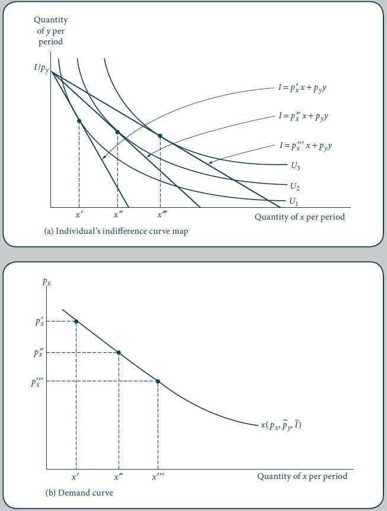
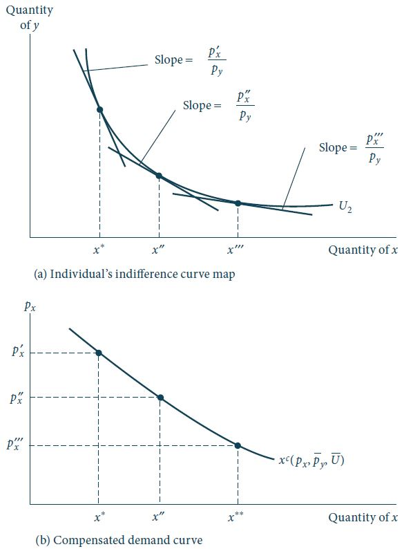
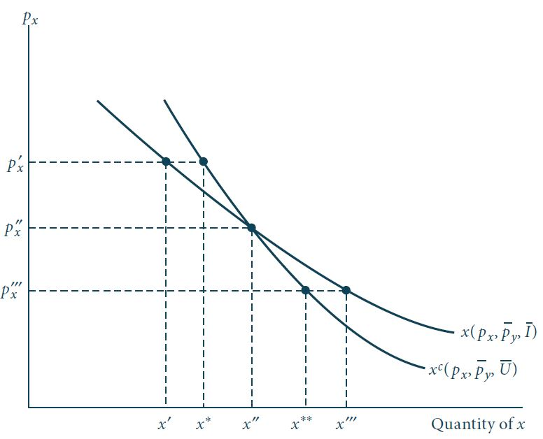

Equação de Slutsky
Curva de demanda individual
Derivação da curva de demanda individual
Para simplificar a análise, consideraremos o caso de apenas dois bens e, como visto anteriormente, a função de demanda Marshalliana para o bem \(x\) é dada por: \[x^* = x(p_x, p_y, I).\]
A curva de demanda derivada por essa função traz a relação entre \(x\) e \(p_x\), enquanto \(p_y\), \(I\) e a relação de preferências são mantidas constantes. Matematicamente:
\[x^* = x(p_x, \bar{p}_y, \bar{I}). \qquad(1)\]
Derivação da curva de demanda individual
Figura 1: Curva de demanda. Fonte: Nicholson e Snyder (2019).
Derivação da curva de demanda individual
Na Figura 1 assumimos que as quantidades ótimas consumidas de \(x\) aumentam à medida que o preço \(p_x\) diminui.
Essa hipótese está de acordo com nossa conclusão geral de que, com exceção do caso observado pelo paradoxo de Giffen, \(\partial x/\partial p_x\) é negativa.
Curva de demanda individual
Uma curva de demanda individual mostra a relação entre o preço de um bem e a quantidade consumida deste mesmo bem por um indivíduo, assumindo que todos os outros determinantes da demanda sejam mantidos constantes.
Deslocamentos da curva de demanda
Na nossa derivação da curva de demanda, três fatores foram mantidos constantes:
a renda do indivíduo.
os preços dos outros bens.
as preferências deste indivíduo.
Se qualquer um desses fatores for alterado, a curva de demanda será deslocada para uma nova posição.
Um aumento na renda deslocaria a curva de demanda para cima, no caso em que \(\partial x/\partial I > 0\).
Se tivermos uma alteração no preço de outro bem, \(p_y\) por exemplo, a curva de demanda pode se deslocar tanto para baixo quanto para cima, a depender de como os bens \(x\) e \(y\) estão relacionados.
Por fim, a curva de demanda também será deslocada se as preferências do indivíduo pelo bem \(x\) se alterarem.
Deslocamentos da curva de demanda
É importante notar que a curva de demanda é apenas uma representação gráfica bidimensional da verdadeira função de demanda, Equação 1 e que será estável apenas se os outros fatores forem mantidos constantes.
Outro ponto importante é a distinção entre deslocamento ao longo da curva de demanda (causado por variações em \(p_x\)) e deslocamento da curva de demanda (causado por variações na renda, preço de outros bens e/ou preferências).
Tradicionalmente, o termo aumento da demanda refere-se a deslocamentos para cima da curva de demanda.
Por sua vez, o termo aumento da quantidade demandada refere-se a movimentos ao longo da curva de demanda causados por uma queda em \(p_x\).
Demanda compensada (Hicksiana): funções e curvas
Curva de demanda compensada
Na Figura 1 o nível de utilidade do indivíduo variava ao longo da curva de demanda.
À medida que \(p_x\) decresce, o nível de utilidade aumenta de \(U_1\) para \(U_2\) e \(U_3\).
Isso acontece devido à hipótese de que a renda nominal e os preços dos outros bens são mantidos constantes.
Portanto, uma queda em \(p_x\) representa um ganho de satisfação (utilidade) para este indivíduo dado que seu poder de compra real aumenta.
Curva de demanda compensada
Figura 2: Curva de demanda compensada. Fonte: Nicholson e Snyder (2019).
Curva de demanda compensada
A derivação da curva de demanda compensada é ilustrada pela Figura 2, onde a utilidade é mantida constante (em \(U_2\)) e o preço \(p_x\) é sucessivamente reduzido.
À medida que \(p_x\) decresce, a renda nominal do indivíduo também decresce e, portanto, impedindo aumentos no nível de utilidade.
Em outras palavras, os efeitos de uma variação de preços no poder de compra são compensados para restringir o indivíduo a manter o mesmo nível de utilidade \(U_2\).
Portanto, na curva de demanda compensada as reações a mudanças de preços incluem apenas o efeito substituição.
No caso de aumentos do preço \(p_x\), a compensação de renda seria positiva para manter o indivíduo sobre a mesma curva de indiferença \(U_2\).
Estes resultados são resumidos pela seguinte definição.
Curva de demanda compensada
Curva de demanda compensada
Uma curva de demanda compensada evidencia a relação entre o preço de um bem e a quantidade ótima consumida sob a hipótese de que os outros preços e a utilidade são mantidos constantes.
Portanto, a curva ilustra apenas o efeito substituição.
Matematicamente, a curva de demanda compensada é uma representação gráfica bidimensional da função de demanda compensada:
\[x^c = x^c(p_x, p_y, U) \qquad(2)\]
Lema de Shephard
Muitos fatos acerca das funções de demanda compensada podem ser provadas utilizando um resultado da teoria da dualidade conhecido como lema de Shephard.
Considere o problema dual de minimização de dispêndio, cujo Lagrangeano associado é dado por:
\[\mathcal{L} = p_x x + p_y y + \mu[U(x,y) - \bar{U}]. \qquad(3)\]
A solução do problema dual de minimização de dispêndio ( Equação 3 ) nos dá a função dispêndio \(E(p_x, p_y, U)\).
Como a função dispêndio é uma função-valor, podemos aplicar o Teorema do Envelope.
Lema de Shephard
- Portanto, aplicando o teorema do envelope com relação a \(p_x\), temos:
\[\frac{d E(p_x, p_y, U)}{d p_x} = \frac{\partial \mathcal{L}}{\partial p_x} = x^c(p_x, p_y, U). \qquad(4)\]
Ou seja, a função de demanda compensada de um bem pode ser obtida diferenciando a função dispêndio com relação ao preço deste bem.
A Equação 4 nos diz que variações no preço de um bem irão afetar os gastos mínimos deste indivíduo em uma proporção aproximadamente igual à quantidade demandada deste bem.
Lema de Shephard
Vimos anteriormente na disciplina que a função dispêndio \(E(p_x, p_y, U)\) é côncava nos preços. Matematicamente, isso quer dizer que: \[\frac{\partial^2 E(p_x, p_y, U)}{\partial p_x^2} < 0.\]
Pelo lema de Shephard podemos, então, calcular a inclinação da curva de demanda compensada: \[\frac{\partial^2 E(p_x, p_y, V)}{\partial p_x^2} = \frac{\partial x^c(p_x, p_y, V)}{\partial p_x} < 0. \qquad(5)\]
A Equação 5 nos diz que a curva de demanda compensada é, necessariamente, negativamente inclinada.
Lema de Shephard
A ambiguidade verificada no caso da curva de demanda Marshalliana não é observada neste caso.
Isso deve-se ao fato de que curvas de demanda compensada envolverem apenas os efeitos substituição e a hipótese de quase-concavidade assegura que a inclinação desta curva de demanda é sempre negativa.
Relação entre curvas de demanda compensada e não-compensada
Figura 4: Relação entre curvas de demanda compensada e não-compensada. Fonte: Nicholson e Snyder (2019).
Relação entre as curvas de demanda compensada e não-compensada
Ao nível de preços \(p_x^{''}\) as curvas de demanda Hicksiana e Marshalliana se interceptam pois, a esse preço, a renda do indivíduo é aquela suficiente para atingir o nível de utilidade \(U_2\).
Portanto, uma quantidade \(x^{''}\) é demandada de acordo com os dois conceitos.
Para preços abaixo deste valor, o poder de compra deste indivíduo deve ser reduzido para que o mesmo nível de utilidade \(U_2\) seja atingido e, portanto, assumindo que \(x\) seja um bem normal, uma quantidade menor do bem \(x\) é demandada sob a ótica Hicksiana quando comparada à curva de demanda Marshalliana.
Por outro lado, para preços acima de \(p_x{''}\), a compensação de renda é positiva já que o indivíduo precisa de um poder de compra maior para atingir o mesmo nível de utilidade. Portanto, se \(x\) é um bem normal, uma quantidade maior de \(x\) é demandada ao longo de \(x^c\) do que ao longo da curva de demanda \(x\).
Relação entre as curvas de demanda compensada e não-compensada
De maneira geral, portanto, para bens normais a curva de demanda compensada é menos responsiva a variações de preços do que a curva de demanda não compensada.
Isto deve-se ao fato de que a curva de demanda Marshalliana reflete tanto o efeito substituição quanto o efeito renda a variações de preços, enquanto a demanda Hicksiana reflete apenas os efeitos substituição.
Exercício
Considere a seguinte função utilidade: \[U(x,y) = x^{0,5}y^{0,5}.\]
Obtenha as funções demanda Marshallianas.
Obtenha as funções demanda Hicksiana via lema de Shephard.
Calcule as quantidades ótimas demandadas, sob as duas óticas, quando \(p_x = 1, p_y = 4, I = 8, U = 2\).
Suponha que \(p_x\) aumente para 4, compare as demandas Hicksianas e Marshallianas neste caso.

Sorteio na próxima aula!
Análise formal da variação de preços
Abordagem Gráfica

Figura 5: Efeitos de uma redução em \(p_x\). Decomposição de Hicks. Fonte: Nicholson e Snyder (2019).
Abordagem indireta
Nosso objetivo agora é desenvolver uma abordagem matemática mais formal para examinar a derivada parcial \(\partial x/\partial p_x\). Ou seja, como uma variação no preço de um bem afeta a quantidade adquirida deste mesmo bem, ceteris paribus, para a curva de demanda Marshalliana tradicional.
Aqui adotaremos uma abordagem indireta que está fundamentada no conceito de dualidade dos problemas de otimização. Fonte: A one line proof of the Slutsky equation, Phillip Cook.
Abordagem indireta
Por definição, sabemos que: \[x^c(p_x,p_y,U) = x[p_x,p_y,E(p_x,p_y,U)]. \qquad(6)\]
Vimos essa conclusão na Figura 4, que mostrou que a quantidade demandada é idêntica para as demandas Hicksianas e Marshallianas quando a renda é exatamente aquela suficiente para atingir o nível de utilidade requerido.
Portanto, temos que: \[\frac{\partial x^c}{\partial p_x} = \frac{\partial x}{\partial p_x} + \frac{\partial x}{\partial E} \frac{\partial E}{\partial p_x}.\]
Rearranjando os termos: \[\frac{\partial x}{\partial p_x} = \frac{\partial x^c}{\partial p_x} -\frac{\partial x}{\partial E} \frac{\partial E}{\partial p_x}. \qquad(7)\]
Efeito substituição
A Equação 7 nos mostra que nosso objeto de interesse, \(\partial x/\partial p_x\), pode ser decomposto em dois termos.
O primeiro termo, \(\partial x^c/\partial p_x\) nos dá a inclinação da curva de demanda compensada.
Essa inclinação representa movimentos ao longo de uma curva de indiferença o que é exatamente o que chamamos anteriormente de efeito substituição.
O primeiro termo do lado direito da Equação 7 é uma representação matemática deste efeito.
Efeito renda
O segundo termo da Equação 7, \(-\frac{\partial x}{\partial E} \frac{\partial E}{\partial p_x}\), reflete o modo com que variações em \(p_x\) afetam a demanda pelo bem \(x\) via mudanças no poder de compra do indivíduo.
Portanto, este termo representa o efeito renda.
O sinal negativo reflete a relação inversa entre mudanças nos preços e variações no poder de compra.
Equação de Slutsky
- A relação representada pela Equação 7 foi originalmente derivada pelo economista e estatístico russo Eugen Slutsky no final do século XIX.
Equação de Slutsky
Primeiro, vamos reescrever o efeito substituição da seguinte forma: \[\text{efeito substituição} = \frac{\partial x^c}{\partial p_x} = \left. \frac{\partial x}{\partial p_x} \right|_{U = \text{constante}}, \qquad(8)\] para indicar movimentos ao longo da curva de indiferença.
Para o efeito renda, temos: \[\text{efeito renda} = -\frac{\partial x}{\partial E}\frac{\partial E}{\partial p_x} = -\frac{\partial x}{\partial I}\frac{\partial E}{\partial p_x}, \qquad(9)\] dado que mudanças na renda \(I\) ou nos gastos \(E\) são idênticas para a função \(x(p_x,p_y,I)\).
Pelo Lema de Shephard temos, então: \[\text{efeito renda} = -x^c\frac{\partial x}{\partial I}.\]
Equação de Slutsky
Portanto, podemos escrever a equação de Slutsky da seguinte forma: \[\begin{aligned} \frac{\partial x(p_x,p_y,I)}{\partial p_x} &=& \text{efeito substituição} + \text{efeito renda} \nonumber \\ &=& \left. \frac{\partial x}{\partial p_x} \right|_{U = \text{constante}} - x\frac{\partial x}{\partial I}, \end{aligned} \qquad(10)\] onde usamos o fato de que \(x(p_x,p_y,I) = x^c(p_x,p_y,V)\) avaliados no ponto de máximo.
A equação de Slutsky ( Equação 10 ) possibilita um tratamento mais definitivo acerca da direção e magnitude dos efeitos renda e substituição.
Equação de Slutsky
O efeito substituição (e a inclinação da curva de demanda compensada) é sempre negativo. Este resultado deriva diretamente da quase-concavidade das funções utilidades (TMS decrescente) e da concavidade da função dispêndio.
O sinal do efeito renda depende do sinal do termo \(\partial x/\partial I\). Se \(x\) é um bem normal, então, este termo é positivo e o efeito renda é negativo. Neste caso, então, preço e quantidade sempre se movem em direções opostas. Se \(x\) é um bem inferior, então \(\partial x/\partial I<0\) e os dois termos da equação de Slutsky possuem sinais distintos. Neste caso, o efeito total de uma variação nos preços é ambíguo - tudo depende das magnitudes relativas de ambos os efeitos. É possível, teoricamente, que, no caso de bens inferiores, o efeito renda domine o efeito substituição, levando ao paradoxo de Giffen (\(\partial x/\partial p_x > 0\)).
Exercício
No exercício anterior, para o caso de uma função utilidade do tipo Cobb-Douglas, vimos que a demanda Marshalliana para o bem \(x\) era: \[x(p_x,p_y,I) = \frac{0,5I}{p_x},\] e a demanda compensada era: \[x^c(p_x,p_y,U) = p_x^{-0,5}p_y^{0,5}U.\]
Mostre que o efeito total de uma variação de preços sobre a demanda Marshalliana é igual à soma dos dois componentes da equação de Slutsky.
Solução
\(\frac{\partial x}{\partial p_x}= -\frac{0,5 I}{p_x^2}\) Encontrar este valor através da decomposição de efeito substituição + efeito renda.
Efeito Substituição: \(\frac{\partial x^c}{\partial p_x} = -0,5 p_x^{-1,5}p_y^{0,5}U\)
- Substituir \(U\) por \(V=\frac{0,5 I}{\sqrt{p_xp_y}}\) (utilidade indireta)
- Efeito Substituição: \(-\frac{0,25I}{p_x^2}\)
Efeito Renda: \(-x\frac{\partial x}{\partial I} = -\frac{0,5I}{p_x}\frac{0,5}{p_x} = -\frac{0,25I}{p_x^2}\)
Logo, efeito substituição + efeito renda = \(-\frac{0,5I}{p_x^2}\)
Apêndice: Teorema do envelope
Teorema do envelope
Teorema 1 (Envelope) Seja \(y^* = f(x_1^*, \dots, x_n^*; a)\) a função valor de \(x\) que maximiza a função objetivo sujeito à restrição.
Se a função valor \(y^*\) e os valores ótimos de \(x^*\) são diferenciáveis, então: \[\frac{\partial y^*}{\partial a} = \frac{\partial \mathcal{L}}{\partial a}(x_1^*, \dots, x_n^*; a).\]
📚 Bibliografia
NICHOLSON, W.; SNYDER C. Teoria microeconômica: Princípios básicos e aplicações. Cengage Learning Brasil, 2019. Disponível em: app.minhabiblioteca.com.br/books/9788522127030
VARIAN, H. R. Microeconomia: uma abordagem moderna. 9.ed. Rio de Janeiro: Elsevier, 2015. Disponível em: app.minhabiblioteca.com.br/books/9788595155107